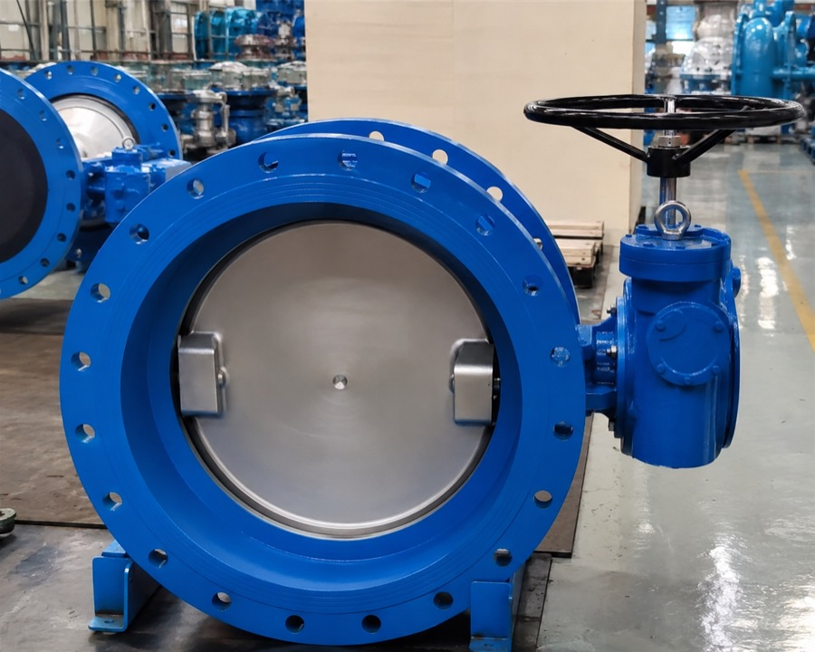

SOUTH AFRICA · CHINA SUPPLY NETWORK
China sourcing and supply for engineering projects
HONVAX helps South African and Southern African buyers source engineering and industrial products from China — from RFQ review and supplier development to quality control, export and delivery coordination.
RFQs, BOQs, specifications and drawings are welcome.
OUR ROLE
The challenge is not simply finding a supplier
China offers strong manufacturing capacity and competitive pricing across many engineering and industrial product categories.
But a competitive factory price does not automatically result in a successful purchase. Product compliance, supplier capability, quality control, documentation, packaging, logistics and total landed cost must be considered together.
Explore HONVAX servicesCORE INDUSTRIES
Focused engineering and industrial supply
We focus on categories where China has a mature supply base and where importing can provide a practical technical and commercial advantage.

Power & Energy
Grid hardware, cable accessories, renewable-energy materials and selected electrical equipment.
View industry →
Water & Municipal
Valves, pipes, fittings, water meters, pumps and selected network equipment.
View industry →
Mining & Industrial
Wear parts, screening products, fasteners, maintenance items and industrial components.
View industry →
Infrastructure & Construction
Steel products, pipework, fasteners, fabricated items and project material packages.
View industry →HOW WE WORK
From purchasing requirement to delivered supply
Sourcing begins with the actual RFQ, not a generic supplier directory.
Review
Understand the scope, specifications, quantity, delivery requirement and missing information.
Source
Identify and screen suitable Chinese manufacturers against the actual requirement.
Compare
Assess technical compliance, commercial terms, lead time, quality and landed cost.
Execute
Coordinate ordering, quality control, documentation, export and delivery.
INITIAL SOURCING REVIEW
Not every requirement should be imported from China
Urgent, low-value, small-quantity or service-intensive requirements may be better sourced in South Africa.
HONVAX can provide an initial assessment of whether a purchasing requirement is suitable for China sourcing before significant supplier-development work begins.
- China supply-chain maturity
- Order size and import economics
- Technical and certification risks
- Delivery and logistics feasibility
START WITH THE REQUIREMENT
Have an RFQ, BOQ or specification?
Send the available documents for an initial review of the China sourcing opportunity.